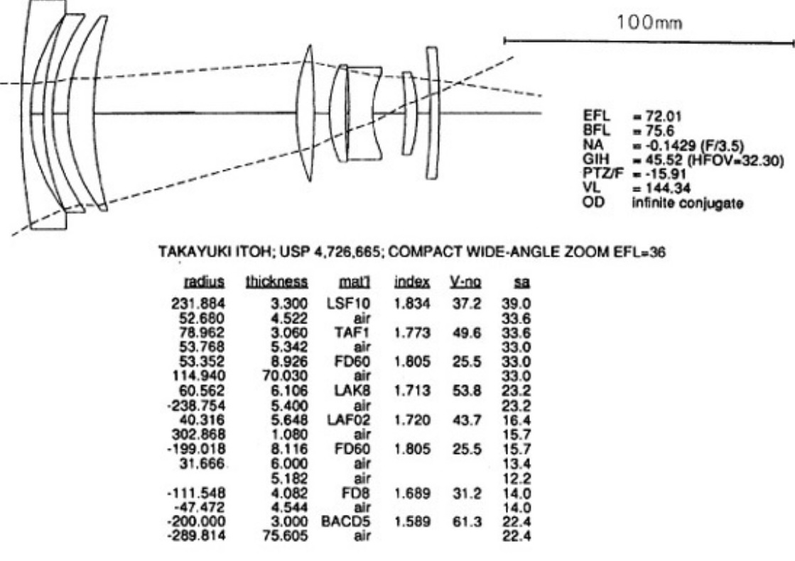
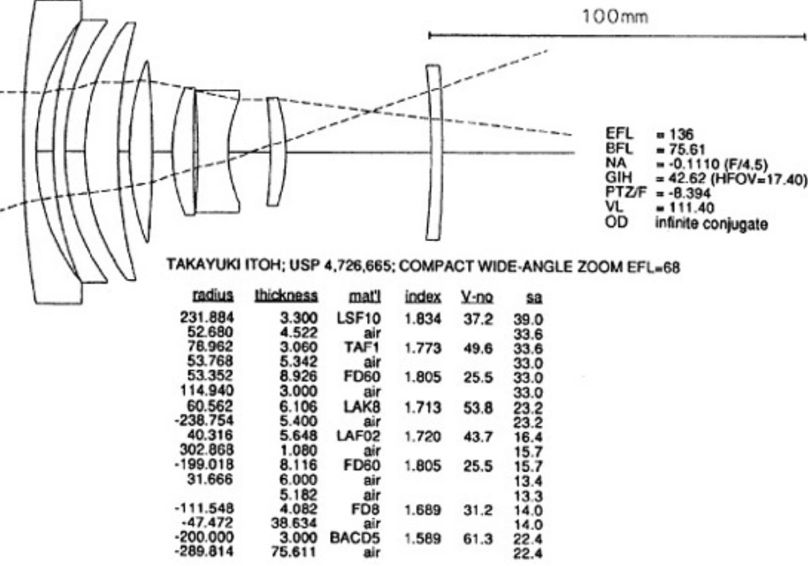

Alex Hao, Arthur Yin, Cindy Chen, Hanchen Wang
At this point, we have fullly completed part 1 of the project. We have a fully functioning compound zoom lens, and although the auto-focus algorithm is not implemented yet, we do have some priliminary design ideas about it.
View the milestone video here: Video
View the presentation slides here: Slides
We simulted a compound zoom lens design from Modern Lens Design by Warren J. Smith, chapter 20.1, figure 20.2. This is a two-component, eight-element, retrofocus type zoom lens, with a zoom ratio of 1.89x. Below are diagrams of the lens in wide-angle state and telephoto state.
|

|

|
The following is an annotated diagram that we used to encode the lens into the pathtracer.
Let the element closest to the sensor be element one, and the element closest to object be element eight. Lens zoom is achieved by increasing the distance between elements one and two while decreasing the distance between elements five and six. The magnitude of the change is linearly controlled by zoom_index, a variable between 0 and 1. See below for details.
1. Added a Lens struct in camera.h, which contains all the parameters associated with a single lens element.
2. Added lens_elem_one to lens_elem_eight fields to the camera class to keep track of all lens elements of the camera lens.
3. Added zoom_index field to the camerea class, which ranges between 0 and 1, with 0 being the wide-angle end and 1 being the telephoto end.
1. "W" and "T" keys can now zoom the lens wider or tighter, respectively. There are six levels of adjustments.
2. "K" and "L" keys still narrows down and opens up the aperture, respectively, but LensRadius is now limited to between 0 and 1, with 1 being the maximum aperture and 0 being a pinhole model.
3. ";" and " ' " keys still make the lens focus closer and farther, respectively. But since now the AF algorithm and this manual focus controll share the same variable Camera::focalDistance, this input may be overridden by the AF algorithm.
Here is a short demo of the compression effect that we are now able to achieve:
This is done by zooming in while moving the camera backwards to keep composition the same.
1. The auto focus algorithm talks to the lens exclusively via the Camera::focalDistance attribute, so the output of the algorithm should only be an adjustment of that attribute, which can be positive or negative.
2. Run the auto focus algorithm before the actual rendering begins. Once the algo calculates the final value for Camera::focalDistance, the full rendering can start using that value.
3. Set a "focus patch" in the screen center, about 20 pixels by 20 pixels. The algorithm simply renders that patch with many different Camera::focalDistance values, and terminates once it finds a value that makes the patch look sharp (that is, decreasing or increasing Camera::focalDistance only makes the patch more blurry).
4. Large increments of Camera::focalDistance are useful at the start, while fine-grained increments are useful when close to the goal value.
5. A challenge is to define sharpness, i.e. how can you quantify the sharpness of an image patch.
6. This algo may not always succeed in finding the correct focus, and that is ok, since its success depends on where the center patch points to. If it points to an area with distinct lines, the focusing will be easier; if it points to, for instance, a pure white wall, it can't possibly focus correctly. So we probably want to let the center patch point to a good spot during testing and debugging.
Week of 4/11 to 4/17: ***DONE!***
1. Research the available lens designs and discuss to decide on one with appropriate complexity.
2. All members review part 4 of project 3-2 and use that as a starting point.
3. Encode all lens elements. Explore on necessary equations.
Week of 4/18 to 4/24: ***DONE!***
1. Implement lens zoom.
2. Update GUI to accommodate lens zoom parameters.
3. All members reasearch the principles of contrast-detection auto focus and its implementations.
Week of 4/25 to 5/1: ***ON TRACK***
1. Milestone on 4/26.
2. Implement auto focus.
3. Add chromatic aberration parameters to lens elements.
Week of 5/2 to 5/5:
1. Make presentation.
2. Final presentation on 5/5.
3. Finalize report and other deliverables.
Smith, Warren J. Modern Lens Design. McGraw-Hill, 2005.